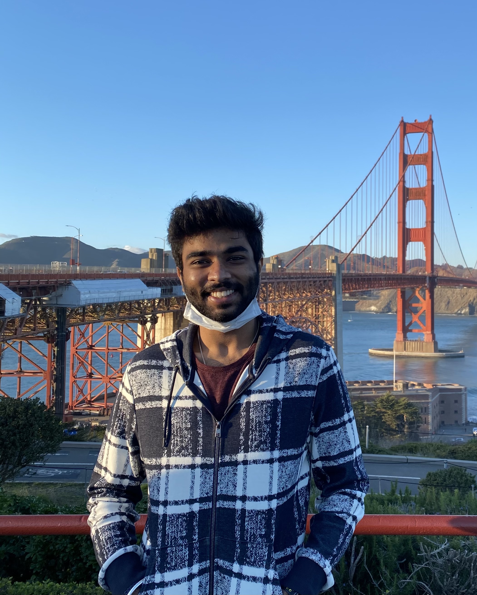

Researcher · Engineer · Builder
UCSD Center for Healthcare Cybersecurity · ARPA-H DIGIHEALS Program
University of California, San Diego — B.S. Computer Science
I build systems that stay operational when the surrounding environment is failing. My work sits at the intersection of critical infrastructure security, network architecture, and operational intelligence: from physically deploying backup hospital networks during ransomware attacks to building national-scale passive monitoring pipelines for medical network infrastructure across the United States.

Golf, surfing, security research. Music: Eric Clapton, Red Hot Chili Peppers, Radiohead. Literature: Fyodor Dostoevsky, Haruki Murakami. Avid NBA fan — Mamba forever.